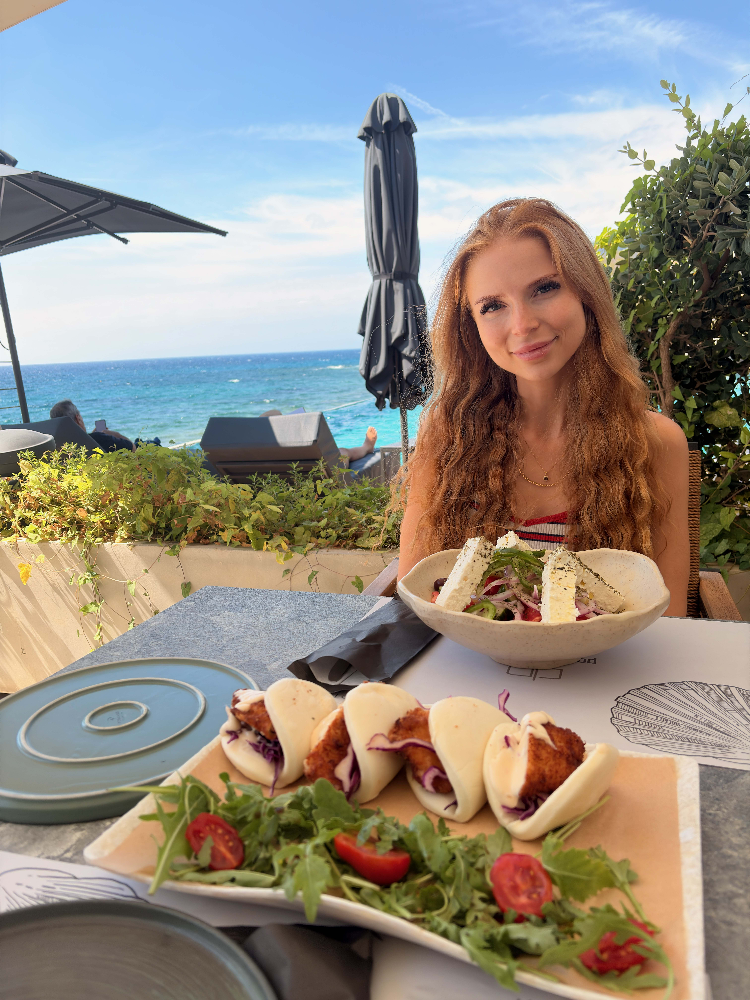

Grekland 2.0
13 september 2026
Efter 13 timmars resa med både bil, flyg och buss kom vi fram till vårat makalösa hotell; Porto Plomari på ön Lesvos i Grekland! Det är andra gången denna sommar som jag är på en ö i Grekland ta mig fan.
I Juli vart det Naxos med familjen men då kunde inte min kära sambo haka på så vi tog en egen vecka nu.
Hotellet är inte klokt.
2 meter från havet, infinitypool, etagerum. 4.5 stjärnor och det märks. Sjukt sliten efter resan dock. åkte hemifrån kl 00:00 till Arlanda och sen bara resa, köa och vänta i 13 timmar som sagt.
Nu tar vi en bärs på balkongen me havets vågor som musik.

← Tillbaka till bloggen